Been working on a tutorial on Guidance for (latent) flow-based generative models, and happened upon a great metaphor today while taking a little "me" time. :-)
— Scott H. Hawley (@drscotthawley.bsky.social) Oct 16, 2025 at 1:26 PM
[image or embed]
1 Flow Where You Want2:
Adding Controls To Pre-Trained Flow Models
by “Flo Gida”, aka Scott H. Hawley, Oct. 2025

“When we put bits into the mouths of horses to make them obey us, we can turn the whole animal. Or take ships as an example. Although they are so large and are driven by strong winds, they are steered by a very small rudder wherever the pilot wants to go.”
– James 3:3-4 (NIV)
In this tutorial, we’ll learn about inference-time “plugin” applications for flow matching generative models such as FLUX or Stable Audio Open Small. Unlike “classifier free guidance” (CFG), which requires the model to be trained with the conditioning signal (i.e. input to control the model’s behavior) you may be interested in, (general) guidance can apply inference-time conditioning that works even with models that were not trained with the specific conditioning you’re interested in.
We’ll look at two applications:
- Classifier Guidance
- Inpainting
Our focus will be on latent space models, since most modern generative models operate in latent space.
This lesson assumes familiarity with flow-based generative models. See the ICLR 2025 blog post “Flow With What You Know” for an overview.
2 I. The General Picture
Intuitively, guidance amounts to “steering” during the integration of the flow model in order to end up at a desired end point. The following video provides a useful metaphor:
Ok, the analogy’s not quite right: you can’t just steer, you are going to have to paddle a little bit. In other words, you’re going to have to provide a bit of a extra velocity to correct the where the “current” flow is taking you.
In flow matching, we go from a source data (distribution) at time \(t=0\)to target data at\(t=1\). Since this tutorial applies to latent space, we’ll use the letter \(z\) for position, such as \(z_t\)being the position at time\(t\).
When you’re “looking ahead” to estimate where you’ll end up, you project linearly along the current velocity $ \(for a duration of the remaining time. Let's call this estimate\) $, your projected endpoint :
\[\widehat{z_1} = z_t + (1-t)\vec{v_t}\tag{1}\]…but perhaps that’s not where you want to go. Where you want to go is a distance$ \(from\) $, and to get there you’ll have to make a”course correction” \(\Delta \hat{v}\), as shown in the following diagram:

By similar triangles, \(\Delta \widehat{z_1} = (1-t)\Delta \vec{v}\), which means the course correction you want is
\[\Delta \vec{v} = { \Delta \widehat{z_1} \over 1-t } \tag{2}\]
Since you’re going to more math once you try to read the scholarly literature on these topics, let’s go a bit further into the math…
So \(\Delta \widehat{z_1}\) is a measure of the deviation from the desired endpoint. Now, in practical application we won’t actually use the “distance” \(\Delta \widehat{z_1}\), but we’ll use something that functions like a distance, such as a K-L divergence or Mean Squared Error (MSE), which are familiar loss functions from neural network training.
When doing inference, this deviation serves the same function as a “loss” does when training models something we will seek to minimize – via gradient descent! – except we’ll vary the flow positions \(z\) instead of the model weights. More specifically, we’ll consider the “likelihood” \(p( \widehat{z_1} | y )\) of getting a \(z_1\)that matches a given control$ y $, and we’ll seek to maximize that likelihood, or equivalently to minimize the negative log-likelihood.
The expression \(-\nabla_{\widehat{z_1}} \log p( \widehat{z_1} | y )\) essentially answers the question, “in which direction should I adjust \(\widehat{z_1}\) so as to make \(p( \widehat{z_1} | y )\) more likely? Just like with gradient descent when training a network, this gives us a direction and a magnitude, which we then multiply by a learning rate”guidance strength” \(\eta\) to turn it into a step size.
So our final expression for \(\Delta v\) will involve replacing \(\Delta \widehat{z_1}\) in (2) with \(- \eta \nabla_{\widehat{z_1}} \log p( \widehat{z_1} | y )\):
\[\Delta \vec{v} = - \eta {1 \over 1-t } \nabla_{z_t} \log p( \widehat{z_1} | y ) \tag{3}\]where we used the fact that$ {} = {z_t} \((since\) z_t $).
The factor of$ 1/ (1-t) $determines how the size of our course correction scales with time. It implies that we can make small course corrections at early times, but comparable corrections at later times require larger adjustments. As we will see later, this is not the only time scale we can choose, but it will suffice for now.
It’s best at this point if we move to a concrete example; let’s use guidance to add some class conditioning to an unconditional generative model by having a separate classifier inspect our estimated outputs. In this case$ p( | y ) \(will be the (logits form of the) Cross-Entropy Loss, where\) y $ are the desired class outcomes.
3 II. Classifier Guidance
If we want our model to generate a member of a particular class, we can use an external classifier to examine the generated samples. The constraint to minimize will be the difference between the desired class and the argmax of the classifier output (or some similar relationship that enforces the class compliance).
For our flow model, let’s use Marco Cassar’s winning submission from the 2025 DLAIE Leaderboard Contest on unconditional latent flow matching of MNIST digits. For the classifier, we’ll use the official evaluation classifier from the same contest.
3.1 Set Up the Flow Model and Classifier
Let’s generate some samples and vizualize them.
Code
# generate some samples
n_samples = 10
x1 = sub.generate_samples(n_samples=n_samples)
x1.shape
from torchvision.utils import make_grid
import matplotlib.pyplot as plt
def show_grid(x1):
if len(x1.shape) == 3: x1 = x1.unsqueeze(1) # add channels dim
grid = make_grid(x1, nrow=10, padding=2, normalize=False)
plt.figure(figsize=(4, 4))
plt.imshow(grid.permute(1, 2, 0).cpu(), cmap='gray')
plt.axis('off')
plt.tight_layout()
plt.show()
show_grid(x1)NameError: name 'sub' is not definedNow let’s setup the (pretrained) classifier we’ll use for the guidance:
# Get the evaluation classifier
!wget -q --no-clobber=off https://raw.githubusercontent.com/DLAIE/2025-LeaderboardContest/refs/heads/main/evaluate_submission.py
from evaluate_submission import setup_resnet
classifier = setup_resnet().to(device).eval()
#@torch.no_grad() <--- Don't do this here! We'll use classifier gradients for guidance later
def classify(classifier, x, use_argmax=False):
if len(x.shape) == 3: x = x.unsqueeze(1) # add channels dim
logits = classifier(x)
probs = F.softmax(logits, dim=1)
return torch.argmax(probs, dim=1) if use_argmax else (logits, probs)
# test the classifer
with torch.no_grad():
logits, probs = classify(classifier, x1)
print(logits.shape, probs.shape)
pred_class = classify(classifier, x1, use_argmax=True)
print(pred_class.cpu())Downloading resnet weights..
torch.Size([10, 10]) torch.Size([10, 10])
tensor([8, 9, 1, 4, 0, 7, 1, 0, 5, 0])Downloading...
From: https://drive.google.com/uc?id=1kW_wnq-J_41_ESyQUX1PJD9-vvbWbCQ8
To: /content/downloaded_resnet.safetensors
100%|██████████| 6.28M/6.28M [00:00<00:00, 76.3MB/s]Let’s make a plot showing the classifier’s output probabilities (aka likelihoods) across all classes, for all 10 samples. The samples will be the rows, and the class-likelihoods outputs from the classifier will be the columns, where brightness is correlated with likelihood.
# @title `show_probs` viz routine
def show_probs(probs, x=None):
"""show probs as colormap intensities via imshow.
have each row be a sample and each column be a class probability"""
ncols = 1 if x is None else 2
fig, axs = plt.subplots(1, ncols, figsize=(8, 4))
if ncols == 1: axs = [axs]
if x is not None: # show a little version of the x image for each row
axs[0].imshow(make_grid(x.unsqueeze(1).cpu(), nrow=1, padding=2, normalize=False).permute(1, 2, 0).cpu(), cmap='gray')
axs[0].axis('off')
# show probabilities as an intensity map
im = axs[ncols-1].imshow(probs.cpu(), cmap='gray')
axs[ncols-1].set_xlabel("Class")
axs[ncols-1].set_ylabel("Sample #")
plt.colorbar(im, ax=axs[ncols-1])
plt.tight_layout()
show_probs(probs, x=x1)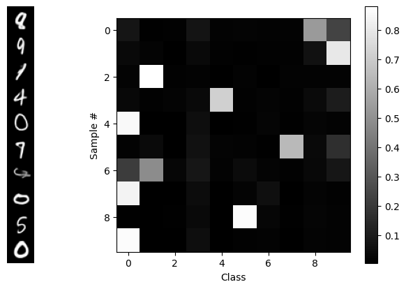
…So we see that this is an unconditional generative model: there’s nothing determining the classes of the outputs – until we add guidance, below! ;-) In a short while, we’ll reproduce that diagram, but we’ll use guidance to get one class per sample, in order, along the diagonal.
To do that, we’re going to have to “break open” the generate_samples routine and even the integrate_path routine to allow us to add a correction to the velocity \(v_t\) generated by the flow model at time \(t\). That correction \(\Delta v\) will be based on the classifier’s output using the projected estimate \(\widehat{x_1}\) of the final data, which we’ll obtain via linear extrapolation.
In our latent space model, we flow with latents \(z\)which must be decoded using the VAE’s decoder$ \(:\)\(\widehat{z_1} = z_t + (1-t) v_t\)$ \[\widehat{x_1} = \mathscr{D}(\widehat{z_1})\]The correction$ v $ will generated from a constraint which in this case is just like regular “classifier loss” function in a supervised learning problem. The desired class label is the “target” and the classifier output of the projected estimate is the “prediction”.
Our code will follow this general layout:
loss_fn = torch.nn.CrossEntropyLoss()
v_t = flow_model(z_t, t)
z1_hat = z_t + (1-t)*v_t # projected destination
x1_hat = sub.vae.decoder(z1_hat) # decode it to pixel space
probs = classify(classifier, x1_hat) # classifer operates in pixel space
loss = loss_fn(probs, target) # "supervised learning"
delta_v = magic_function(loss,...???) # <--- here's the part we need to work out
v_t = v_t + delta_v * guidance_strength # we can set the strength of the correctionSo what magic function will turn that loss into a velocity? Well, we can turn to good old Gradient Descent! Except instead of taking the gradient with respect to the model weights like we used to, we’re going to take the gradient with respect to the flow coordinates \(z\) in the latent space, thereby generating a vector in the latent space.
The insight is that PyTorch lets us compute the gradient with respect to anything. We just need to tell it what we want. And we need to be careful to make sure that the VAE and flow models stay frozen, so the only thing that’s allowed to change are the latents \(z\).
The cleanest way to pull this off, code-wise, is to create a function called compute_v() which for starters will just call the flow model, but then we’ll add to it with guidance info:
# wherever we used to just call flow_model(), we'll now call compute_v() instead
@torch.no_grad()
def compute_v(flow_model, z, t, guidance_dict=None, **kwargs):
v_t = flow_model(z, t)
if guidance_dict is not None:
v_t += compute_dv(v_t, z, t, guidance_dict, **kwargs)
return v_t
@torch.enable_grad() # <-- later, this will be a key for getting guidance
def compute_dv(v_t, z, t, g:dict, **kwargs):
"placeholder for now, will add guidance math later"
return torch.zeros_like(v_t).detach() # no correction yet; no gradients returnedWe’ll to use our usual “boilerplate” flow integration code, except we’ll add “**kwargs” everywhere so we can pass controls “all the way in” to the compute_dv() guidance routine, and pair flow_model() as an arg to compute_v() via functools.partial.
# @title flow integration routines, slightly modified from "flow with what you know" blog
from functools import partial # use partial to package flow_model with compute_v
@torch.no_grad()
def rk4_step(f, y, t, dt, **kwargs): # regular rk4, + kwargs passthrough
# f: callable (y, t) -> dy/dt
k1 = f(y, t, **kwargs)
k2 = f(y + 0.5 * dt * k1, t + 0.5 * dt, **kwargs)
k3 = f(y + 0.5 * dt * k2, t + 0.5 * dt, **kwargs)
k4 = f(y + dt * k3, t + dt, **kwargs)
return y + (dt / 6) * (k1 + 2 * k2 + 2 * k3 + k4)
@torch.no_grad()
def warp_time(t, dt=None, s=.5):
"""Parametric Time Warping: s = slope in the middle.
s=1 is linear time, s < 1 goes slower near the middle, s>1 goes slower near the ends
s = 1.5 gets very close to the "cosine schedule", i.e. (1-cos(pi*t))/2, i.e. sin^2(pi/2*x)"""
if s < 0 or s > 1.5: raise ValueError(f"s={s} is out of bounds.")
tw = 4 * (1 - s) * t ** 3 + 6 * (s - 1) * t ** 2 + (3 - 2 * s) * t
if dt: # warped time-step requested; use derivative
return tw, dt * 12 * (1 - s) * t ** 2 + 12 * (s - 1) * t + (3 - 2 * s)
return tw
@torch.no_grad()
def integrate_path(model, initial_points, step_fn=rk4_step, n_steps=100, warp_fn=None, latent_2d=False, prog_bar=True, t0=0, **kwargs):
p = next(model.parameters())
device, model_dtype = p.device, p.dtype
current_points = initial_points.to(device=device, dtype=model_dtype).clone()
model.eval()
ts = torch.linspace(t0, 1, n_steps, device=device, dtype=model_dtype)
if warp_fn: ts = warp_fn(ts)
if latent_2d: t_batch = torch.empty((current_points.shape[0], 1), device=device, dtype=model_dtype)
vel_model = partial(compute_v, model) # here's the secret sauce
iterator = range(len(ts) - 1)
if prog_bar: iterator = tqdm(iterator, desc="Integrating Path")
for i in iterator:
t, dt = ts[i], ts[i + 1] - ts[i]
if latent_2d: t = t_batch.fill_(t.item())
current_points = step_fn(vel_model, current_points, t, dt, **kwargs)
return current_points
def generate_samples(sub, n_samples: int, n_steps=15, z0=None, t0=0, **kwargs) -> torch.Tensor:
z0 = torch.randn([n_samples, sub.latent_dim]).to(sub.device) if z0 is None else z0
z1 = integrate_path(sub.flow_model, z0, n_steps=n_steps, step_fn=rk4_step, t0=t0, **kwargs)
gen_xhat = F.sigmoid(sub.decode(z1).view(-1, 28, 28))
return gen_xhat# quick no-guidance test with this newer code:
x1 = generate_samples(sub,n_samples=10) # , guidance_dict="Coming up next")
x1.shapetorch.Size([10, 28, 28])Now that we know that works, let’s “supe up” compute_dv() to include the guidance correction. We’ll use the torch.autograd.grad() function to compute the gradient of the loss.
First we have the guidance_dict that we’ll use to pass through our intentions through the various layers of routines to get to compute_dv():
guidance_dict ={'classifier': classifier, # the classifier model to use
'decode': sub.decode, # how to decode to pixel space for classifier
'loss_fn': torch.nn.CrossEntropyLoss(reduction='none'), # don't sum over batch dim
'target': torch.arange(10).to(device), # desired class outcomes
'strength': 5.0, # "guidance strength", you may vary this
't_min': 0.01, 't_max': 0.99, # t range to apply guidance, may vary these
}Next we have the fully-equipped compute_dv(). This code is overly-commented to make it easy to follow each step. (We replaced guidance_dict with g locally for brevity.) No other changes to any preceding code are necessary. We’ll be ready to do guided inference after this definition!
@torch.enable_grad() # <-- Needed to compute gradients if calling code has @torch.no_grad()
def compute_dv(v_t, z, t, g:dict, eps=1e-6, debug=False):
"Compute the guidance correction to the flow velocity"
if t < g['t_min'] or t > g['t_max']: return torch.zeros_like(v_t).detach()
z.requires_grad_(True) # need to enable gradient tracking for z
z1_hat = z + (1 - t) * v_t # linear projection to estimated endpoint
# Decoding to pixel space (if decoder provided)
x1_hat = z1_hat if g['decode'] is None else F.sigmoid(g['decode'](z1_hat)).view(-1, 28, 28)
logits, probs = classify(g['classifier'], x1_hat) # run classifier
loss = g['loss_fn'](logits, g['target'][:len(logits)]) # loss <-> "negative log likelihood"
# Compute grad wrt z. "grad_outputs=": don't sum over over batch, keep unique to each datum
grad_z = torch.autograd.grad(loss, z, grad_outputs=torch.ones_like(loss), retain_graph=False)[0]
dv = -grad_z / (1 - t + eps) # - minimizes, (1-t) makes it velocity, eps helps stability
z.requires_grad_(False) # cleanup (z is a tensor so local changes could propagate)
return g['strength'] * dv.detach() # detach so no gradients returnedLet’s go!
torch.manual_seed(0) # for reproducibility as we change other things
with torch.no_grad():
x1 = generate_samples(sub, n_samples=10, guidance_dict=guidance_dict, debug=False)
logits, probs = classify(classifier, x1)
show_probs(probs, x=x1)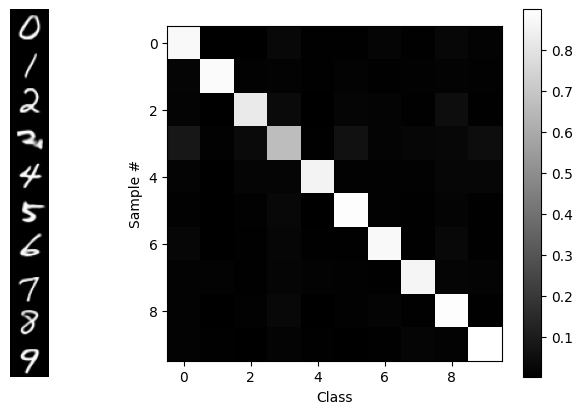
BLAM! Our desired goal: in order, along the diagonal. We see that guidance isn’t perfect, but that’s partially a function of the VAE and the flow model too.
To get a better survey of the capabilities, let’s make a 10x10 grid of outputs with classes along each column:
target = torch.arange(10).repeat(10).to(device) # [0,1,2,..9, 0,1,2,..9, ...]
guidance_dict['target'] = target
torch.manual_seed(42) # (optional) for reproducibility
x1 = generate_samples(sub, n_samples=len(target), guidance_dict=guidance_dict)
show_grid(x1)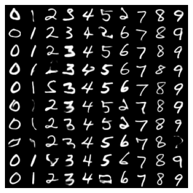
That worked fine, but if you run it on a CPU, it’s painfully slow. So instead, let’s…
3.2 Train a Latent Classifier
We’ll train a model z_classifier that looks only in latent space, so we can use it as a guidance signal.
# @title Encode MNIST to latents & save to file
from torch.utils.data import DataLoader, TensorDataset
from torchvision.datasets import MNIST
from torchvision.transforms import ToTensor
@torch.no_grad()
def encode_dataset(vae, dataset, batch_size=512):
"""Encode entire dataset into VAE latents (z = mu)"""
device = next(vae.parameters()).device
loader = DataLoader(dataset, batch_size=batch_size, shuffle=False)
all_latents, all_labels = [], []
must_flatten = None
with torch.no_grad():
for data, labels in tqdm(loader):
x = data.to(device)
# next bit is so it should work with linear layers or conv
if must_flatten is None or must_flatten==False:
try:
z = vae.encoder(x)
except RuntimeError:
z = vae.encoder(x.view(x.size(0), -1))
must_flatten = True
else: z = vae.encoder(x.view(x.size(0), -1))
mu, logvar = z
all_latents.append(mu.cpu())
all_labels.append(labels)
return torch.cat(all_latents), torch.cat(all_labels)
def encode_mnist(vae, filename=None, batch_size=512):
print("Acquiring train & test MNIST image datasets...")
train_ds = MNIST(root='./data', train=True, download=True, transform=ToTensor())
test_ds = MNIST(root='./data', train=False, download=True, transform=ToTensor())
print(f"\nEncoding dataset to latents...")
train_latents, train_labels = encode_dataset(vae, train_ds, batch_size=batch_size)
test_latents, test_labels = encode_dataset(vae, test_ds, batch_size=batch_size)
if filename is not None:
print(f"Saving to {filename} ...")
torch.save({ 'train_z': train_latents, 'test_z': test_latents,
'train_labels': train_labels, 'test_labels': test_labels }, filename)
return train_latents, train_labels
# Encode the dataset
latent_data_filename = 'mnist_latents.pt'
if not os.path.exists(latent_data_filename):
if platform != 'solveit':
train_latents, train_labels = encode_mnist(sub.vae, filename=latent_data_filename)
else:
import threading
thread = threading.Thread(target=encode_mnist, args=(sub.vae, latent_data_filename))
thread.start()Acquiring train & test MNIST image datasets...
Encoding dataset to latents...
Saving to mnist_latents.pt ...100%|██████████| 9.91M/9.91M [00:00<00:00, 17.9MB/s]
100%|██████████| 28.9k/28.9k [00:00<00:00, 481kB/s]
100%|██████████| 1.65M/1.65M [00:00<00:00, 4.45MB/s]
100%|██████████| 4.54k/4.54k [00:00<00:00, 12.0MB/s]# @title `load_encoded_data` from file
def load_encoded_data(filename):
if 'MyDrive' in filename:
from google.colab import drive
drive.mount('/content/drive')
data_dict = torch.load(filename, weights_only=True)
return data_dict
data_dict = load_encoded_data(latent_data_filename)
train_z, test_z = data_dict['train_z'], data_dict['test_z']
train_z.shape, test_z.shape
# Create datasets from the latent tensors
train_latent_ds = TensorDataset(train_z, data_dict['train_labels'][:train_z.shape[0]])
test_latent_ds = TensorDataset(test_z, data_dict['test_labels'])
batch_size = 512
train_latent_dl = DataLoader(train_latent_ds, batch_size=batch_size, shuffle=True)
test_latent_dl = DataLoader(test_latent_ds, batch_size=batch_size, shuffle=False)
print(f"Train batches: {len(train_latent_dl)}, Test batches: {len(test_latent_dl)}")
# print single latent size
print(f"Latent size: {train_latent_ds[0][0].shape}")
Train batches: 118, Test batches: 20
Latent size: torch.Size([16])# Very simple classifier in latent space
from torch import nn
class LatentClassNet(nn.Module):
def __init__(self, latent_dim=16, hidden_dim=32, n_classes=10):
super().__init__()
self.fc1 = nn.Linear(latent_dim, hidden_dim)
self.fc2 = nn.Linear(hidden_dim, hidden_dim)
self.fc3 = nn.Linear(hidden_dim, latent_dim)
self.fc4 = nn.Linear(latent_dim, n_classes)
def forward(self, z):
z = F.leaky_relu(self.fc1(z))
z = F.leaky_relu(self.fc2(z))
z = F.leaky_relu(self.fc3(z))
z = F.leaky_relu(self.fc4(z))
return z
z_classifier = LatentClassNet().to(device)# @title Latent classifier trianing loop
epochs, lr = 10, 1e-3
model = z_classifier
optimizer = torch.optim.Adam(model.parameters(), lr=lr, weight_decay=1e-5)
criterion = nn.CrossEntropyLoss()
for epoch in range(epochs):
model.train()
#pbar = tqdm(train_latent_dl)
for i, (latents, labels) in enumerate(train_latent_dl):
optimizer.zero_grad()
latents, labels = latents.to(device), labels.to(device)
logits = z_classifier(latents)
loss = criterion(logits, labels)
#pbar.set_postfix({'train_loss': loss.item()})
if i % 3 == 0: print("=",end="") # simple progress bar
loss.backward()
optimizer.step()
model.eval()
val_latents, val_labels = next(iter(test_latent_dl)) # might need to reset sometimes
val_latents, val_labels = val_latents.to(device), val_labels.to(device)
val_logits = model(val_latents)
val_loss = criterion(val_logits, val_labels)
val_acc = (val_logits.argmax(dim=1) == val_labels).float().mean()
print(f"| Epoch {epoch+1}: val_loss={val_loss.item():.4f}, val_acc={val_acc.item():.4f}")========================================| Epoch 1: val_loss=1.1540, val_acc=0.6758
========================================| Epoch 2: val_loss=0.2064, val_acc=0.9395
========================================| Epoch 3: val_loss=0.1129, val_acc=0.9590
========================================| Epoch 4: val_loss=0.0876, val_acc=0.9746
========================================| Epoch 5: val_loss=0.0836, val_acc=0.9727
========================================| Epoch 6: val_loss=0.0731, val_acc=0.9727
========================================| Epoch 7: val_loss=0.0722, val_acc=0.9746
========================================| Epoch 8: val_loss=0.0684, val_acc=0.9746
========================================| Epoch 9: val_loss=0.0667, val_acc=0.9727
========================================| Epoch 10: val_loss=0.0657, val_acc=0.9766Let’s test our newly-trained latent classifier to make sure it works before trying to use it for guidance.
# Get some some data
z, L = test_latent_ds[20:30]
z = z.to(device)
x = F.sigmoid(sub.decode(z)).view(-1,28,28)
print("z.shape = ",z.shape)
print("Labels: ",L,"\n")
show_grid(x.squeeze())
# run the z_classifier
with torch.no_grad():
logits, probs = classify(z_classifier, z)
print(f"\nlogits.shape = {logits.shape}\nprobs.shape = {probs.shape}")
pred_class = classify(z_classifier, z, use_argmax=True)
print("Classes:", pred_class.cpu())z.shape = torch.Size([10, 16])
Labels: tensor([9, 6, 6, 5, 4, 0, 7, 4, 0, 1])
logits.shape = torch.Size([10, 10])
probs.shape = torch.Size([10, 10])
Classes: tensor([9, 6, 6, 5, 4, 0, 7, 4, 0, 1])Looks pretty good. Moving on to…
3.3 Latents-Only Gudiance!
Now that we have a trained classifier that operates in latent space, we can run basically the same code as before, only it will execute wayyyyy faster. :)
guidance_dict ={'classifier': z_classifier,
'decode': None, # no decoding, latent space only
'loss_fn': torch.nn.CrossEntropyLoss(reduction='none'), # don't sum across batch dim
'target': torch.arange(10).repeat(10).to(device),
'strength': 5.0, # "guidance strength"
't_min': 0.01, 't_max': 0.99, }
torch.manual_seed(42) # remove for new samples each time
x1 = generate_samples(sub, n_samples=len(guidance_dict['target']), guidance_dict=guidance_dict)
show_grid(x1)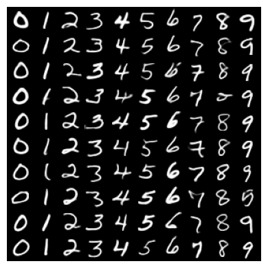
Was that fast or WHAT?! 🚀
Since we no longer have to propagate gradients through the much larger VAE decoder model and pixel-space classifer, we can get answers a lot faster via our small latents-only classifier.
Let’s move on to another application of guidance, for which our guidance signal doesn’t depend on a separate trained (classifier) model at all: inpainting.
4 III. Inpainting
When inpainting, we have some “mask” inside which some of the data have been removed, and we want to use the model to fill in the missing part in a way that matches with the surrounding pixels. Let’s take a look at an example from MNIST, where we show an original image, the mask and the masked-out image:
# @title
#@ Demo what inpainting looks like
test_ds = MNIST(root='./data', train=False, download=True, transform=ToTensor())
x = test_ds[7][0]
H, W = x.shape[-2:]
M = torch.ones([H,W], dtype=x.dtype, device=x.device) # 1 = keep pixels
M[H//3:2*H//3, W//3:2*W//3] = 0 # 0 = mask out
x_masked = M*x
print("Original Image | Mask | Masked Image")
show_grid( torch.cat([x, M.unsqueeze(0), x_masked],dim=0) )Original Image | Mask | Masked Image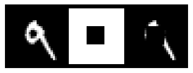
Another example would be a picture of a face where you’ve blocked out the nose and you want the model to fill in a nose.
Now, some of the “filling in” you can get “for free” because the model has only been exposed to data that satisfies the manifold or probability distribution of the training data – e.g. If it was trained on faces, then it only ever saw faces with noses and hence can only generate faces with noses – but the real trick is to do it “well” and have it be “good” in the end. ;-)
There’s a wealth of information on guidance as it was originally applied to diffusion models. Sander Dieleman’s blog post, “Guidance: a cheat code for diffusion models”, is a classic and should (eventually) be read by all. Yet because of the stochastic/random nature of the diffusion path, there are several “complicating” aspects of diffusion guidance that we’re going to gloss over in this tutorial because in the case of deterministic, smooth flow-model trajectories, things become a lot more intuitive.
We’ll follow a method outlined in the paper “Training-free Linear Image Inverses via Flows” by Pokle et al, a methoda that applies to general linear inverse problems of which inpainting is a particular case, and we’ll simplify their method to adapt it for just inpainting.
The method will be to try to generate an entire new image \(x_1\) that everywhere outside the mask matches up with the pixels in user-supplied (masked) image \(y\). So the constraint will be, given a 2D mask \(M\) (where \(M\)=1 means there’s an original pixel there, and \(M\)=0 is the masked-out region), to require that our estimate image \(\widehat{x_1}\)(i.e. the decoded image version of the estimated latets$ \() satisfies\) M = M y$, or in a “residual form”, we’ll just compute the Mean Squared Error (MSE) of \(M*(\widehat{x_1}-y)\):
\[{\rm Constraint:} = M^2 * (\widehat{x_1}-y)^2\](and if we want, we can use the fact that$ M \(being a binary mask means\) M^2 = M $).
If we want to do latent-only inpainting (which will be the fastest), then the same constraint applies just with the simplification \(\widehat{x_1} = \widehat{z_1}\)
The authors of the paper recommend only doing guidance from t equals 0.2 onward because prior to that, it’s hard to make any meaningful estimate.. In fact, they don’t even integrate before $ t = 0.2$. They just interpolate between the source and the target data to get their starting point at \(t = 0.2\).
To use our constraint in the guidance equation (3) for computing $v, $, we’ll need to turn our constraint into a likelihood by raising it to an expontential power – so we get a Gaussian! But the guidance equation includes a logarithm that immediately undoes our exponentiation:
\[ \Delta v = - {\eta \over 1-t} \nabla_{z_t} \not{\color{red}{\log}} \not{\color{red}{\exp}}\left( M^2 * (\widehat{x_1}-y)^2 \right) .\]The gradient part is\[\nabla_{z_t} M^2 *(\widehat{x_1}-y)^2 = 2M^2*(\widehat{x_1}-y) {\partial \widehat{x_1} \over \partial z_t }\]If we’re inpainting in latent space and not using the decoder for the constraint, then$ { / z_t } = 1 $. Otherwise that term will require evaluation via PyTorch’s autograd (=slow).
Our earlier time scaling was \(1/(1-t)\); turns out that doesn’t work very well in practice when it comes to inpainting. Instead, we’ll use a different time scaling that delivers good (albeit not perfect) results: \((1-t)/t\). Thus our full equation for the velocity correction will be:
\[\Delta \vec{v} = -\eta {1-t\over t} M^2 *(\widehat{x_1} - y){\partial\widehat{x_1}\over\partial{z_t}}\]where we absorbed the factor of 2 into$$, and the last partial derivitive term can be one if we do latent-only inpainting.
Let’s implement this in code, using two different versions of the gradient calculation, depending on whether we can do it all in latent space or if we need to propagate gradients through the decoder:
@torch.no_grad() # gradients computed analytically!
def ip_latents_grad(v_t, z, t, g:dict, eps=1e-6, **kwargs):
"gradients for latent-only inpainting, fast"
z1_hat = z + (1-t)*v_t
return g['M_sq'] * (z1_hat - g['y']) # x1_hat = z1_hat, dz1_hat/dz_t=1
@torch.enable_grad()
def ip_pixels_grad(v_t, z, t, g:dict, eps=1e-6, **kwargs):
"gradients for pixel-space inpainting. need to use decoder & track via autograd, = slow"
z.requires_grad_(True)
z1_hat = z + (1-t)*v_t
x1_hat = F.sigmoid(g['decode'](z1_hat)).view(-1,1,28,28) # TODO: un-hard-code img size
grad_x = g['M_sq'] * (x1_hat - g['y'])
grad_z = torch.autograd.grad(x1_hat, z, grad_outputs=grad_x,retain_graph=False)[0] # mults grad_x by dx1_hat/dz1_hat
z.requires_grad_(False)
return grad_z.detach() # don't send gradients onward
def t_timescale(t, timescale='mine', **kwargs):
"our choice for adaptive time sacle"
if timescale =='simple': return 1/(1-t) # our earlier scale; doesn't work
elif timescale=='pokle': return (1-t)**2 / ((1-t)**2 + t**2) # from pokle et al; can't get it to work
elif timescale=='constant': return 4 # or any constant. The 4 is from Pokle et al
else: return (1-t)/t # This works pretty well! strong guidance at start -> zero at end
def compute_dv_inpainting(v_t, z, t, g:dict, **kwargs):
"wrapper to call appropriate gradient-computation routine"
if t < g['t_min'] or t > g['t_max']: return torch.zeros_like(v_t)
grad_fn = ip_latents_grad if g['decode'] is None else ip_pixels_grad
grad = grad_fn(v_t, z, t, g, **kwargs)
dv = -g['strength'] * t_timescale(t, **kwargs) * grad
return dv.detach()4.1 Do the Inpainting!
Start with masked images \(y\)…
# setup the data
y = torch.stack([test_ds[i][0] for i in range(50)])
print(y.shape)
y = M*y
show_grid(y.squeeze())torch.Size([50, 1, 28, 28])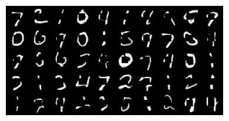
And now we run the inpainting code
compute_dv = compute_dv_inpainting # register our new guidance routine
inpainting_dict ={'decode': sub.decode, # how to decode to pixel space for classifier
'M_sq': (M**2).to(device),
'y': y.to(device),
'strength': 1.0, # "guidance strength", you may vary this
't_min': 0.2, 't_max': 0.999, # t range to apply guidance, may vary these
}
with torch.no_grad():
torch.manual_seed(0) # for reproducibility as we change other things
t0 = 0.2 # starting time as per Pokle et al
z0 = torch.randn([len(y), sub.latent_dim]).to(sub.device)
zy = sub.encode(y.to(device)) # encoded version of masked image
z0 = z0 * (1-t0) + zy * t0 # interpolation init
inpainting_dict['t_min'] = t0
x1 = generate_samples(sub, n_samples=len(y), t0=t0, z0=z0, guidance_dict=inpainting_dict, warp_fn=None, debug=False)
#x1 = torch.where(M>0.9, y.squeeze(), x1) # force no changes from y, wherever mask M=1
# show pre- and post-inpainting
show_grid(y.squeeze())
show_grid(x1)
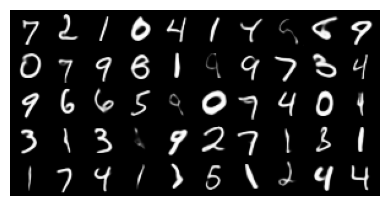
We see that the generated images generally look great, although in some cases, the in-painting code has changed pixels even where the mask is 1. We can disallow this by just resetting those values to the pixels in \(y\).
Turning up the guidance strength would also enforce our constraint better, but turning up too high causes the whole thing to diverge and we get garbage out.
In order to experiment with other methods more easily, we should do inpainting only in latent space, and for that we will need a model that supports spatial latents…
4.2 Latent-Only Inpatining
For this we will switch to a model that uses 7x7 latents that look like smaller versions of the full images.
For our mask, we will simply shrink the pixel-size mask to the size of the latents.
# Get Spatial VAE & FLow Dit Model
!wget -q --no-clobber=off https://raw.githubusercontent.com/dlaieburner/2025-leaderboard/refs/heads/main/sample_submission_dit.py
try:
del SubmissionInterface # remove Marco's from earlier; make it reload
except NameError:
pass # nevermind
from sample_submission_dit import SubmissionInterface
sub = SubmissionInterface().to(device)On colab, mounting GDrive
Mounted at /content/drive
device = cudaDownloading...
From: https://drive.google.com/uc?id=1kPK3ZPadOUEfH8ZycrG3k27pl9-lGUeL
To: /content/downloaded_vae.safetensors
100%|██████████| 12.6M/12.6M [00:00<00:00, 50.0MB/s]
Downloading...
From: https://drive.google.com/uc?id=1q9Iguf--2_MqUjsosS7iAGGzYtVfJ3UF
To: /content/downloaded_flow.safetensors
100%|██████████| 34.1M/34.1M [00:00<00:00, 136MB/s] # Colab plot display needs a reset sometimes
%matplotlib inlineTODO: Show example latents and images.
if len(x1.shape) < 4: x1 = x1.unsqueeze(1)
z1 = sub.encode(x1)
show_grid(z1.squeeze())WARNING:matplotlib.image:Clipping input data to the valid range for imshow with RGB data ([0..1] for floats or [0..255] for integers). Got range [-2.6157863..7.8071876].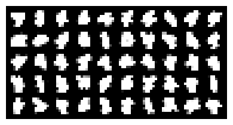
inpainting_dict ={'decode': None, # now we're latents-only
'strength': 1.0, # "guidance strength", you may vary this
't_min': 0.2, 't_max': 0.999, # t range to apply guidance, may vary these
}
@torch.no_grad()
def latents_only_inpaint(sub, inpainting_dict, n_samples: int, n_steps=20, **kwargs) -> torch.Tensor:
torch.manual_seed(0) # for reproducibility as we change other things
t0 = 0.2 # starting time as per Pokle et al
zy = sub.encode(y.to(device)) # encoded version of masked image
# Mz is the shrunk-down version of M
Mz = F.interpolate(M.unsqueeze(0).unsqueeze(0), size=zy.shape[-2:], mode='bilinear', align_corners=False).to(device)
Mz = 1.0*(Mz > 0.9) # make Mz binary
print("Mask:")
show_grid(Mz)
zy = zy* Mz # enforce mask in latent space.
inpainting_dict['M_sq'] = (Mz**2).to(device)
inpainting_dict['y'] = zy
print("Latent y's:")
show_grid((zy.squeeze() -zy.min())/(zy.max()-zy.min()))
z0 = torch.randn_like(zy) * (1-t0) + zy * t0 # interpolation init
inpainting_dict['t_min'] = t0
x1 = generate_samples(sub, n_samples=len(y), t0=t0, z0=z0, guidance_dict=inpainting_dict, warp_fn=None, debug=False)
return x1
inpainting_dict['strength'] = 10.0
x1 = latents_only_inpaint(sub, inpainting_dict, n_samples=len(y), n_steps=20)
# show pre- and post-inpainting
print("pixel y's:")
show_grid(y.squeeze())
print("inpainted images:")
show_grid(x1)Mask:
Latent y's:
pixel y's:
inpainted images:

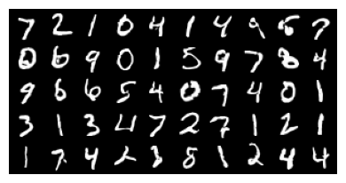
Notice the execution speed!
Now, if we want to enforce the original pixels where the mask is one, we can do that at every stage of the integration process. We just need to modify the integration process to overwrite \(z\) wherever Mz is 1..
4.3 Next section (with overwrites) isn’t working yet
@torch.no_grad()
def integrate_path(model, initial_points, step_fn=rk4_step, n_steps=100, warp_fn=None, latent_2d=False, prog_bar=True, t0=0, **kwargs):
p = next(model.parameters())
device, model_dtype = p.device, p.dtype
current_points = initial_points.to(device=device, dtype=model_dtype).clone()
model.eval()
ts = torch.linspace(t0, 1, n_steps, device=device, dtype=model_dtype)
if warp_fn: ts = warp_fn(ts)
if latent_2d: t_batch = torch.empty((current_points.shape[0], 1), device=device, dtype=model_dtype)
vel_model = partial(compute_v, model) # here's the secret sauce
iterator = range(len(ts) - 1)
if prog_bar: iterator = tqdm(iterator, desc="Integrating Path")
for i in iterator:
t, dt = ts[i], ts[i + 1] - ts[i]
if latent_2d: t = t_batch.fill_(t.item())
g = kwargs.get('guidance_dict')
if False and g:
z, zy, M = current_points, g['y'], g['M_sq']
zy_interp = torch.randn_like(z)*(1-t) + zy*(t)
z_over = M*zy_interp + (1-M)*z # overwrite w/ zy_interp where M=1
current_points = (current_points + z_over)/2 # average
current_points = step_fn(vel_model, current_points, t, dt, **kwargs)
return current_points
inpainting_dict['strength'] = 10.0
x1 = latents_only_inpaint(sub, inpainting_dict, n_samples=len(y), n_steps=20).cpu()
x1 = M*y + (1-M)*x1.unsqueeze(1) # overwrite
# show pre- and post-inpainting
show_grid(y.squeeze())
show_grid(x1)Mask:
Latent y's:
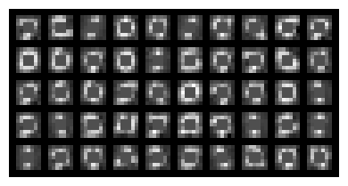

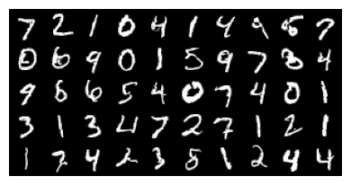
5 References
TODO
- fwwyk blog
- sander’s blog
- pokle et al paper
- pnp-flow paper
- zach’s favorite papers
- zander b’s new paper